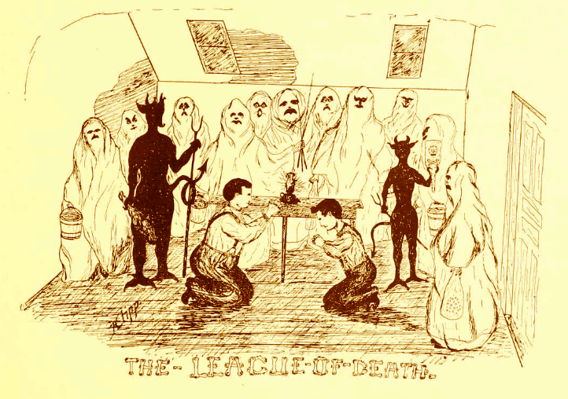

In 1866, the same year that Lebanon Valley College was founded, a secret society was born that would go down in infamy as a destructive group of students that loved to pull pranks.
However, one night they took it too far, and became nothing more than a suppressed memory of LVC's history.
Establishment
The League of Death is deeply rooted within the history of LVC, since it was founded the very same year as the college itself. The League was founded by a group of faculty members with a common belief that they could keep the students in line.
Perfect Class
After a certain point, The League of Death became too much for the faculty to handle, and in 1902 was passed down to a group of reliable students, often referred to a "The Perfect Class." This is when it truely became The League of Death.
Chain Of Command
As the League of Death started to grow, it became more fraternity like in nature, and developed a strict chain of command, which included:
High-Cock-A-Lorum: The “president” or “figurehead” of the group. This position is the highest of the group and is also the leader.
Big Devil: The High-cock-a-lorum’s right hand man. He was second in command and was usually a junior ready to take role as the High-cock-a-lorum during his senior year.
Little Devil: Is the understudy for the Big Devil. He was usually a sophomore that has been taken under the wing of the Big Devil.
Paddler: In charge of the nightly servings of “forty-fives,” or paddlings. He could be either a junior or senior.
Pranksters
The beliefs of the members became altered over the years, and The League of Death evolved from student police to student deviants. The students started pulling small pranks on other students and faculty members, like removing all the doorknobs and messing with the school's outhouses. However, as the years went on, the pranks became more and more harsh.
Oliver P. Butterwick
In 1909, an innocent freshman arrived at LVC with ambition and charm. He was quickly noticed by The League of Death, and was inducted in to The League that very same year. His induction included being pattled over a tombstone and forced to recite hymns. By day, Oliver was known for his charming personality and influence among his peers. By night however, Oliver was known for his crazy pranks that were ofter over the top, which earned him a reputation as the most famous member of The League. During his time at Lebanon Valley College, Ollie worked his way up the ranks of the society, until he received the position of High-Cock-A-Lorum during his senior year in 1912.
Too Far
Under Ollie's leadership, The League became more dangerous than it had ever been. While Ollie may have been amused by the pranks he was pulling, they were often destructive to people and property of Lebanon Valley College. One of Ollie's most infamous pranks was when he got The League of Death to steal live chickens from a professor's farm, only to feed them to that very professor the next day at a student faculty dinner.
President Keister
The Rev. Dr. Lawrence Keister was hired as the ninth president in 1907. At the time he was hired the college was struggling financially. He helped bring stability back to the college and began renovating the buildings and added 1,000 feet of walkways to the campus. He was known as a stern man and wanted only the best for the college. He began implementing rules around campus, one of which was the immediate termination of The Death League.
Final Baptism
When members of the not so secret society heard about Keister's plan to get rid of The League of Death once and for all, tesnsions became high, and everyone looked to their leader for guidence. Oliver P. Butterwick began plotting his most famous, and ultimatly tragic prank to date, known simply as "The Final Baptism." They had one objective: get rid of President Keister. After a night of planning they came to a simple conclusion: Blow the Presidents office up with dynamite. On the fateful day of January 18th 1911 students gathered in the room of Oliver Butterwick to begin their attack. The Death League called this day, “The Final Baptism.” All of a sudden President Keister appeared at the door of the men’s dormitory and called a meeting with every alleged member of The League. President Keister caught wind of The Death League’s sinister plot and began expelling students for their involvement. Oliver P. Butterwick pleaded that he had no idea about the plot to blow the office up and charmed the President into letting him stay for his final semester on campus. In their meeting together President Keister told Ollie that “The college would have been a better place if he never attended.”
The Fall
President Keister then set into motion his final judgement of banning The Death League from the campus. The only member left at the college to state in their yearbook that they had any involvement in The Death League was Oliver P. Butterwick. During that last semester a missionary came to the college from China and captivated the students with stories of traveling the other side of the world. Ollie was among those who felt empowered by the missionary to spread the word of God, and left for China as soon as he graduated. When Ollie left LVC, so did the heart and soul of The League of Death. Over the next few years, a couple of students tried to revive the dead society, but failed to do so.
The End
As the former members of The League began to fade from memory, so did the deviant beliefs that were responsible for turning student police in to student criminals.
Facts
The “Big Devil” is on the left while the “Little Devil” is on the right. These two personally gave the victims their dues. The lantern on the desk shows that these scene is taking place at night.
This entry can be found in the 1903 yearbook as one of the first public documents of the hierarchy of the group, its victims for the year, and a lengthy description of the organization. Note that the faculty were its charter members, but needed to pass the group into the hands of the student body.
A short poem written by a student showing the pleasures of living at Lebanon Valley College. The unknown author writes, “Because the League of Death preserves such good order.” It shows that some students feared The League while others embraced their presence.
“Silence has many advantages.” This is the motto for the senior gentlemen that were involved with the death league.
A fantastic illustration found in another yearbook illustrating the types of treatments that were imposed on the freshmen of that year. The college is in the distance over the hills which means this is the same cemetery along route 934
A unique entry shows that the location of the meeting place for the gentlemen of The Death League has changed from the cemetery to Brightbill’s Gymnasium. This shows that the faculty still supported those that were in The League.
A very creative poem written by a member of The Death League. The uppercase letters at the end of almost every sentence are actually the initials of the men that were in The Death League for that year.
The League has moved back to the cemetery at this mine and still meeting at night. Note that D.E Weidler is not president and his initials were mentioned in the previous poem.
The resolutions that President Keister wrote when he was inducted into office as Lebanon Valley College’s 9th president. He was a very strict man that wanted to bring back stability to the school.
About The Authors
Nicholas Bechtold
High-cock-a-lorum
Lebanon Valley College
Major: Digital Communications
Minor: Computer Science
From: Lebanon, Pennsylvania
Email: neb001@lvc.edu
Phone: 717-383-2791
Programming Languages: JavaScript, Java, C++, HTML5, PHP, SQL
Zane Brown
Paddler
Lebanon Valley College
Major: Digital Communications
Concentration: User Experience
From: Silver Spring, Maryland
Email: zmb001@lvc.edu
Phone: 301-641-8129
Design Tools: Adobe Photoshop, Adobe Illustrator, Adobe Indesign, Adobe Premiere
Joseph J. D'Angelo
Little Devil
Lebanon Valley College
Major: Digital Communications
Concentration: Programming
From: Frackville, Pennsylvania
Email: jd004@lvc.edu
Phone: 570-933-9085
Programming Languages: Java, JavaScript, C++, HTML5
Damian Grosso
Big Devil
Lebanon Valley College
Major: Digital Communications
Concentration: User Experience
From: Aston, Pennsylvania
Email: djg006@lvc.edu
Designers Toolbox: Adobe Creative Suite, User Experience Design, & Experience Design